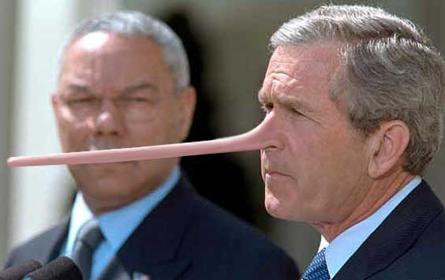

|

Liar, liar, pants on fire
Bush lies and manipulates public and Congress. And his trousers are ablaze.
- - - - - - - - - -
by Carla Binion
 N A MAY 2003 ARTICLE for The American Prospect, Drake Bennett and Heidi Pauken write "it is no exaggeration to say that lying has become Bush's signature as president . . . More distressing even than the president's lies, though, is the public's apparent passivity. Bush just seems to get away with it." N A MAY 2003 ARTICLE for The American Prospect, Drake Bennett and Heidi Pauken write "it is no exaggeration to say that lying has become Bush's signature as president . . . More distressing even than the president's lies, though, is the public's apparent passivity. Bush just seems to get away with it."
The Bush administration lied and deceived its way into the Iraq war.
Bush has also misled the public with fallacy and deceptive rhetoric. In The Progressive, April 2003, editor Matthew Rothschild talks about Bush's manipulation of language. Rothschild quotes a line from Bush's February 10 speech to a conference of religious broadcasters: "Before September the 11th, 2001, we thought oceans would protect us forever."
Later that day at an informal press conference, Bush repeated the "ocean" catchword, saying: "The world changed on September 11 . . . In our country, it used to be that oceans could protect us - at least we thought so." He used the "oceans" example again in his March 6 press conference.
Rothschild asked Mark Crispin Miller, author of The Bush Dyslexicon, what he makes of Bush's rhetoric. Miller replied: "This notion of unprecedented vulnerability is absolutely crucial to the Bush team's anti-constitutional program. The true meaning of anything Bush says is connotative. What that statement really means is, 'We were safe, now we're in danger, and the danger is so severe that you must give me all possible power. What the oceans once did now only I can do."
Rothschild notes the Bush description is irrational, because oceans haven't really served as a buffer since Pearl Harbor. In fact, says Rothschild, the Soviet Union's intercontinental ballistic missiles were aimed at the U.S. for years despite the oceans' barrier.
However, when words are used in ways that manipulate public fear, facts and rationality are beside the point. The aim of the corruption of language - whether conscious or unconscious - is to confuse rather than clarify, and to cause the listener to believe an illusion rather than the truth.
In his article, "Fallacies and War," Dave Koehler points out misleading public arguments the administration uses to justify war. For example, the Bush team often presents the false dilemma - claiming there are only two possible options when, in fact, more choices are available.
Kohler refers to the statement Bush issued right after 9/11: "You're either with us or with the terrorists." As Kohler says "Countries can be both against terrorism and not an ally of the U.S . . . Many countries are showing they are both against a preemptive war and against the current Iraqi regime." Bush said the U.N. must vote for war or face irrelevance. As Kohler points out, the U.N. can simultaneously survive and disagree with Bush.
The Bush team also repeatedly uses the fallacy of exclusion, meaning they leave out important aspects of any given argument. For example, Colin Powell and George Bush spoke about aluminum tubes being used for uranium enrichment for nuclear weapons use. Kohler notes they failed to take into account the essential fact that U.N. inspectors said the tubes were conventional rocket artillery casings.
Kohler points to another fallacy, argument from ignorance - the claim that what hasn't been disproved must be true. The Bush administration implies Iraq must have weapons of mass destruction because of Iraq's failure to prove it doesn't. As Kohler says, the burden of proof is on the party making the claim, therefore the U.S. "must prove that Iraq has WMD. It is impossible for Iraq to prove they don't."
In his article, "An Orwellian Pitch," John R. McArthur, publisher of Harper's Magazine, writes about the Bush team's manipulation of public opinion. He says, "Effective propaganda relies on half-truths and the conflation of disparate 'facts' (like Saddam's genuine human rights violations)." McArthur says the Bush team has managed to get away with this deceptive fact twisting because they use a tactic George Orwell described as "slovenliness" in the language.
Both Orwell and Aldous Huxley have written about dictatorial leaders and their methods of managing public opinion. In Brave New World Revisited, Huxley wrote that tyrants often use propaganda techniques that rely on the following. (1) Repetition of catchwords, (2) Suppression of facts the propagandist wants the public to ignore. (3) Inflaming mass fear or other strong emotional reaction for the purpose of controlling public opinion and behavior.
Huxley talks about Adolf Hitler's propaganda efforts to appeal to the emotions of the masses instead of reason. He notes that Hitler systematically exploited the German people's hidden fears and anxieties. The Bush administration has clearly exploited the American people's fears of terrorism since September 11.
According to Huxley, Hitler said the masses run on instinct and emotion rather than facts and are easy to manipulate, while society's intellectuals and independent thinkers insist on factual evidence and logic and easily see through fallacies. Huxley says Hitler encouraged the masses to attack or shout down intellectual dissenters rather than engage them in logical debate, because the rational dissenters would likely win any argument on the basis of fact.
Bush supporters have tried to silence dissent. Media bulldogs such as Bill O'Reilly, Rush Limbaugh and Michael Savage often use Hitler's suggested technique of attacking and shouting down antiwar voices.
Huxley quotes Hitler's statement that "all propaganda must be confined to a few bare necessities and then must be expressed in a few stereotyped formulas . . . Only constant repetition will finally succeed in imprinting an idea upon the memory of a crowd." Bush has delivered the stereotyped formulas "You're either with us or with the terrorists;" "the oceans can't protect us;" and Saddam is connected with "al Qaeda," using constant repetition.
There can be little doubt the Bush administration has worked to coerce Congress, the public and the media into supporting Bush's Iraq policy. On MSNBC, reporter Jeff Greenfield discussed the administration's war propaganda with news anchor Paula Zahn. Greenfield said propaganda isn't necessarily a negative thing, because it can influence an enemy regime to behave in ways that help U.S. troops and government officials.
The problem is, Bush's propaganda has targeted average American citizens and Congress, using tactics that were once reserved to influence enemy governments abroad. Propaganda is negative when it promotes lies and encourages people to act against their own best interests, as the Bush administration's spin has done.
 Next page | Bush sold the Iraq war by repeatedly (and falsely) linking September 11 with Saddam Hussein Next page | Bush sold the Iraq war by repeatedly (and falsely) linking September 11 with Saddam Hussein
1, 2
|